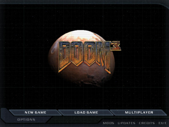
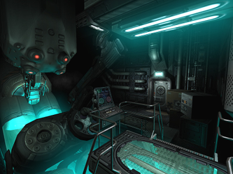
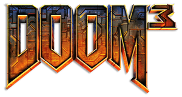

Doom 3
Dieser Artikel wurde für die folgenden Ubuntu-Versionen getestet:
Ubuntu 14.04 Trusty Tahr
Zum Verständnis dieses Artikels sind folgende Seiten hilfreich:
Doom 3 ist ein brachialer Horror-Shooter. Es handelt sich inhaltlich nicht um eine Fortsetzung des zweiten, sondern um eine Nacherzählung des ersten Teils der Serie. Das Spiel konzentriert sich stark auf den Einzelspielermodus, der Mehrspielermodus ist eher rudimentär und wurde erst mit dem in Deutschland nicht veröffentlichten Addon Resurrection_of_Evil verbessert. Im Mehrspieler-Modus werden wie im ersten Spiel vier Spieler pro Karte zugelassen. Wie von id Software  gewohnt, setzte man auch diesmal mit der neu entwickelten Doom3-Engine technische Maßstäbe.
gewohnt, setzte man auch diesmal mit der neu entwickelten Doom3-Engine technische Maßstäbe.
Die Deutsche Version entspricht der originalen US-Version. Um das Spiel zu installieren und zu starten, ist ein gültiger CD-Key erforderlich.
Im Oktober 2012 wurde eine überarbeitete Version von Doom 3 mit verbesserten Grafiken und Spieledesignänderungen unter dem Titel: Doom 3 - BFG Edition veröffentlicht.
Um auch die klassischen Doom-Titel unter Ubuntu zu spielen bietet sich z.B. Chocolate Doom an. Als Total Conversion findet sich im Wiki The Dark Mod.
|  |  |
| Hauptmenü | Spielszene |
Installation der Spieleengine¶
Methode 1 - Doom 3¶
Es gibt von id Software direkt sowohl ein Installationspaket der Spieleengine als auch eine DEMO-Version des Spiels. Zu finden sind diese z.B. bei:

Danach müssen die Programme noch installiert werden [3] [4]:
sudo ./doom3-linux-1.1.1286-demo.x86.run # DEMO-Version sudo ./doom3-linux-1.3.1.1304.x86.run # Spieleengine ohne Spieledaten (Level, ect.)
Bei der Vollversion fehlen noch die Spieledaten, welche in einem separaten Abschnitt besprochen werden. Nach erfolgreicher Installation kann das Spiel über einen der folgenden Befehle gestartet werden [2]. Beim ersten Start wird dabei die Seriennummer des Spiels abgefragt:
| Spielstart | |
| Befehl | Modus |
doom3 | Client-Modus |
doom3-dedicated | Server-Modus |
doom3 +set fs_game d3xp | Client-Modus mit der Erweiterung Resurrection of Evil |
Hinweis:
Diese Methode funktioniert nicht auf aktuelleren Ubuntu-Versionen (> 14.04 LTS).
Methode 2 - Dhewm3¶
Da die Spieleengine von id Software wegen veralteter Bibliotheken unter neueren Ubuntuversionen nicht funktioniert, wurde mit "Dhewm3" eine an den aktuellen Stand angepasste Spieleengine entwickelt. Als Grundlage dient dabei die als Open-Source freigegebene Originalspieleengine. Ab Ubuntu 15.10 sind diese in den Paketquellen enthalten [1]:
dhewm3 (Spieleengine)
dhewm3-doom3 (wird für das Hauptspiel auf jeden Fall gebraucht)
dhewm3-d3xp (wird bei Nutzung des Expansionspack zusätzlich benötigt)
 mit apturl
mit apturl
Paketliste zum Kopieren:
sudo apt-get install dhewm3 dhewm3-doom3 dhewm3-d3xp
sudo aptitude install dhewm3 dhewm3-doom3 dhewm3-d3xp
Für ältere Ubuntuversionen und neuere Versionen der Spieleengine können über ein Fremdpaket von Getdeb installiert werden: dhewm3
Hinweis!
Zusätzliche Fremdquellen können das System gefährden.
Nach der Installation sollte die Fremdquelle wieder deaktiviert werden, da in dieser noch weitere Programme enthalten sind und somit andere, bereits auf dem PC installierte Programme mit aktualisiert werden.
Es fehlt noch die Installation der Spieledaten, welche in einem separaten Abschnitt besprochen werden. Danach kann das Spiel über das Spielemenü aufgerufen werden. Beim ersten Start wird dabei die Seriennummer des Spiels abgefragt.
Methode 3 - Doom 3: BFG-Edition bzw. rbdoom3bfg¶
Im Oktober 2012 wurde eine überarbeitete Version von Doom 3 unter der Bezeichnung Doom 3 - BFG-Edition veröffentlicht. Diese kann mit dem Programm rbdoom3bfg gespielt werden. Ab Ubuntu 15.10 ist es in den Paketquellen enthalten[1]:
rbdoom3bfg (Spieleengine)
mit apturl
Paketliste zum Kopieren:
sudo apt-get install rbdoom3bfg
sudo aptitude install rbdoom3bfg
Für ältere Ubuntuversionen und euere Versionen des Spiel können über ein Fremdpaket von Getdeb installiert werden: rbdoom3bfg
Hinweis!
Zusätzliche Fremdquellen können das System gefährden.
Nach der Installation sollte die Fremdquelle wieder deaktiviert werden, da in dieser noch weitere Programme enthalten sind und somit andere, bereits auf dem PC installierte Programme mit aktualisiert werden.
Es fehlt noch die Installation der Spieledaten, welche in einem separaten Abschnitt besprochen werden. Danach kann das Spiel über das Spielemenü aufgerufen werden. Beim ersten Start wird dabei die Seriennummer des Spiels abgefragt.
Spieledaten¶
Nach der Installation müssen noch einige Dateien von der Spiele-DVD oder den CDs in den passenden Ordner kopiert werden. Dies ist für Methode 1 der Pfad /usr/local/games/doom3/base [5] und bei der Installation über Methode 2 der Ordner ~/.local/share/dhewm3.
| Spieledateien | |
| Medium | Datei |
| CD 1 | /Setup/Data/base/pak002.pk4 |
| CD 2 | /Setup/Data/base/pak000.pk4 |
| /Setup/Data/base/pak001.pk4 | |
| CD 3 | /Setup/Data/base/pak003.pk4 |
| /Setup/Data/base/pak004.pk4 | |
| DVD | /Setup/Data/base/pak*.pk4 |
Gleiches gilt für eine Datei aus dem Expansion Pack, welche in das Verzeichnis /usr/local/games/doom3/d3xp kopiert werden muss
| Spieledateien | |
| Medium | Datei |
| CD 1 | /Setup/Data/d3xp/pak000.pk4 |
Patch¶
Für die Methode 2 müssen zusätzlich noch einige Daten aus der Datei doom3-linux-1.3.1.1304.x86.run entpackt werden, welche hier heruntergeladen werden kann:
sh doom3-linux-1.3.1.1304.x86.run --tar xvf --wildcards base/pak* d3xp/pak*
Es handeln sich dabei um die Dateien pak005.pk4 bis pak008.pk4 im base-verzeichnis und um die Datei pak001.pk4 in dem d3xp-Verzeichnis.
Wie man für Methode 3 an die Spieledaten der Doom 3 - BFG-Edition kommt, ist auf der Projektwebseite RBDOOM beschrieben.
Bei den neueren Paketversionen können die Daten auch in das Homeverzeichnis unter ~/.config/dhewm3/base und ~/.config/dhewm3/d3xp bzw. ~/.config/rbdoom3fg/base kopiert werden. Alternativ gib es mit dem Game-Data-Packager ein Tool, welches aus den Spieledaten ein Installationspaket erstellt welches wiederum die Spieledaten dann im System installiert.
Modifikationen¶
Beim Installieren von Mods muss man darauf achten, ob das Archiv des heruntergeladenen Mods einen neuen Ordner kreiert oder nicht. Wenn ja, entpackt man den Mod einfach ins Doom3-Verzeichnis oder nach ~/.config/dhewm3 bzw. ~/.config/rbdoom3bfg im Homeverzeichnis. Wenn nicht, erstellt man vorher einen neuen Ordner und entpackt den Mod in diesen [3]. Eine Übersicht an verschiedenen Modifikationen findet man unter anderem auf moddb.com. Anschließend kann die Modifikation im Hauptmenü des Spiels unter "Mods" ausgewählt werden.

Infobox¶
| Doom 3 / Doom 3 - BFG Edition | |
| Genre: | Ego-Shooter |
| Sprache: | |
| Veröffentlichung: | 2004 / 2012 |
| Publisher: | Activision |
| Systemvoraussetzungen: | mind. 1,5 GHZ / 384 MB RAM / 2,2 GB freier Festplattenspeicher / DVD- bzw. CD-ROM / Grafikkarte >= 64MB RAM |
| Medien: | DVD (1) / CD (3+1) / Download Download |
| Strichcode / EAN / GTIN: | 4012160162500 / 4012160470049 / 4012160344265 |
| Läuft mit: | nativ, Wine |


- Erstellt mit Inyoka
-
 2004 – 2017 ubuntuusers.de • Einige Rechte vorbehalten
2004 – 2017 ubuntuusers.de • Einige Rechte vorbehalten
Lizenz • Kontakt • Datenschutz • Impressum • Serverstatus -
Serverhousing gespendet von